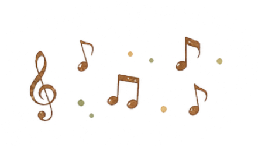
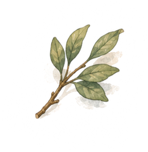
在世界出發以前，耳朵先在隔壁家醒來
《隔壁家的世界聲音旅圖：從古老樂器到現代耳朵的聲音巡禮》
一封把窗戶打開、把耳朵帶上的旅圖邀請信
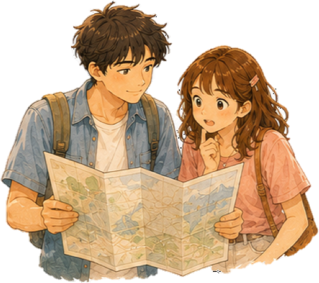
書前序文｜宇宙觀
一、門口先不要急著走
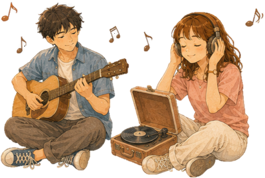
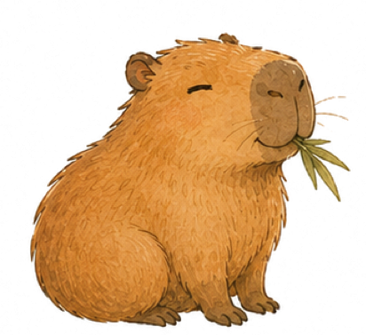
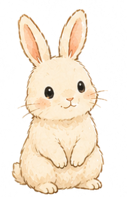
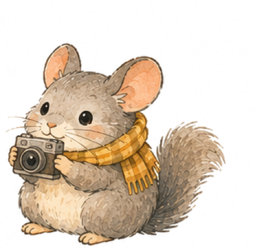
隔壁家的世界聲音旅圖，常常不是從機場開始。
它從水壺快滾以前，那一點細細的顫開始。從杯子碰到木桌，短短一聲開始。從窗邊植物被風吹到，葉子擦過牆面開始。從唱片機還沒轉起來以前，房間裡那一小塊安靜開始。
那天早上，白兔先從地毯邊緣走過，腳步小到像怕吵醒什麼。刺蝟戴著圓眼鏡，忽然抬頭，像聽見一個很短、很準、剛好出現的暗號。水豚還趴在原地，慢慢等剛剛那聲杯響散完。絨鼠窩在柔軟的角落，讓整個房間都小聲了一點。
隔壁女孩把一本厚厚的筆記本打開。裡面夾著照片、地圖、車票、樂器草圖，還有幾張她昨晚查到忘記睡的資料。
「等一下，這裡是不是不一樣？」
她把一張陌生樂器的照片推到桌邊，眼睛亮得像剛打開一個寶箱。孔在哪裡？弦怎麼排？那個圓圓的共鳴箱在幫誰說話？兩件看起來差不多的樂器，聲音怎麼會差那麼多呀？
隔壁男孩沒有立刻看名字。他先戴上耳機，閉起眼睛。長音慢慢走出來，像從很遠的地方經過胸口，又輕輕散到窗外。低音往腳底走，鼓聲把肩膀推了一下，弓毛拉過弦時，那種像人快要說話的聲音，讓他把播放倒回去。
「你聽，這裡很厲害。」
女孩本來想繼續看構造，聽著聽著，筆卻停在紙上。男孩本來沉在聲音裡，聽久了，也回頭問：「它為什麼會這樣響？」
於是，他們把耳機分成兩邊。一邊是資料，一邊是感受。一邊看見細節，一邊讓聲音落進身體。兩邊加起來，剛好像一扇門。
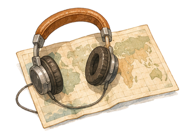
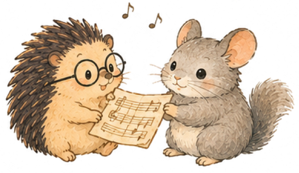
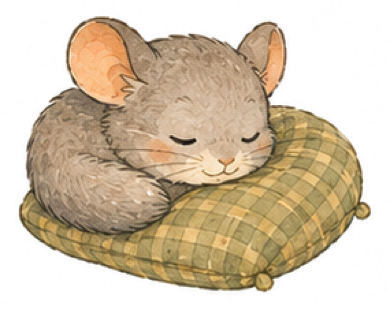
二、桌上的地圖慢慢亮起來
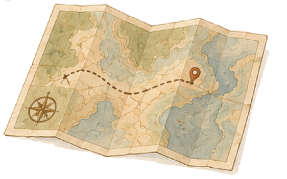
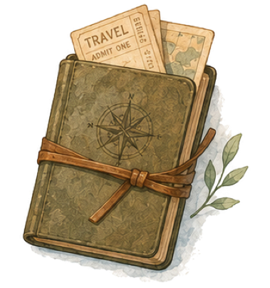
女孩把照片分成好幾疊。吹管放在窗邊，弦樂器靠近木桌，鼓和小打擊先暫時排在地毯上。男孩把播放清單打開，第一段聲音還沒播完，水豚已經把下巴放回地上，像準備陪大家等一整天的尾音。
每一疊照片都在問同幾件事：這個聲音從哪裡來？它靠什麼方式響起來？今天還能在哪裡遇見它？
有些聲音從山谷、河邊、沙漠、島嶼、寺院、宮廷、街頭或祭典裡來。它們帶著材料的氣味、手勢的痕跡、社群的記憶，也帶著某些地方才有的風、光、腳步和說話方式。
有些聲音已經換了新的路。它們進入博物館、錄音、影片、採樣音源、影視配樂或現代舞台；也可能從耳機、唱片、網頁、劇場，甚至從桌上的一張紙、一個紙盒、兩支鉛筆，悄悄靠近。
樹葉、紙巾、橡皮筋、紙箱、湯匙、鑰匙和鉛筆，當然不是那些真正的樂器。它們只是小小的入口。薄紙可以讓人先感覺氣流怎麼讓東西顫動；紙箱可以讓手掌先知道中心、邊緣和空腔不一樣；兩支鉛筆可以讓短音在桌面上站穩一下。
隔壁家就從這些入口出發。看形狀，也聽材料；查來源，也試手感；走向遠方，也把聲音帶回生活。
讀到這裡，其實行李已經差不多了。耳朵帶上，好奇心帶上，手指、胸口、腳底也一起帶上。地圖上的第一條路，正在窗邊亮起來。
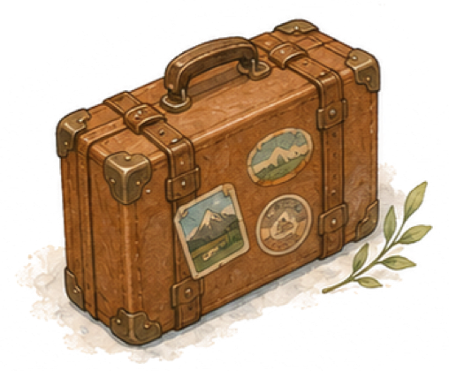
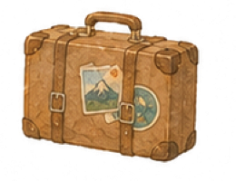
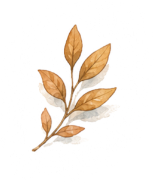
三、旅圖之間，隔壁家的那一天
這趟旅圖沒有一口氣把世界攤開。隔壁家像真的過了一天。
清晨，水壺還沒滾，耳朵先醒來。女孩把筆記本打開，男孩把耳機分一邊，白兔從地毯邊緣走過，刺蝟抬頭，水豚還在等杯聲散完。世界還沒出發，房間已經開始響了。
早晨開窗時，風先進來。紙角被吹動，女孩拿起一張薄紙，往邊緣輕輕吹，紙巾抖了一下。白兔立刻轉頭。那一刻，大家還沒有真的拿到奈伊笛、尺八或班蘇里笛，卻先懂了一點點：氣不是空空經過，它會碰到邊緣，會被分開，會讓東西顫動。
到了午後，風慢慢停下來。女孩把吹管樂器的照片收進一疊資料夾，又從旁邊抽出另一疊：圓背琴、長頸琴、箏、琴碼、弦軸、共鳴箱。陽光斜斜落在桌上，像也變成一條弦。男孩聽著撥弦一下、一下、一下，忽然說：「它很像有人邊走邊唱。」
傍晚來得很慢。桌上的弦還沒收完，房間的光已經被拉長。女孩本來還在比較琴身，聽到一段擦弦，筆停在紙上。男孩也沒有立刻說話。這一段，大家說話都小聲一點，像怕把那條長音弄斷。
夜裡，燈打開了。地毯、木桌、杯子、腳步，都開始像會回答人。男孩先被鼓聲帶走，肩膀輕輕晃。女孩敲桌面中央，又敲桌邊，發現聲音真的不一樣。紙箱可以先教人一點空腔，杯緣可以先教人一點尾音。水豚趴得更穩，像在提醒大家：不要急，聲音還在房間裡。
夜再深一點，刺蝟反而精神很好。桌上出現木棒、鑰匙、鈴、石頭、杯子、小沙鈴。房間變成一座回聲城市，一邊是木石金屬排成的街道，一邊是掌心裡落下的節奏星塵。
最後，桌邊多了一台鍵盤和一台電腦。老照片、取樣片段、網站資料庫、博物館示範影片，一起攤在桌上。聲音可能從管風琴的風裡來，從手風琴的風箱裡來，從磁帶、電路、取樣器、合成器裡來，也可能從很多人一起演奏的廣場裡來。古老的聲音，開始抵達今天的耳朵。
四、六段旅圖，六種靠近世界的方式
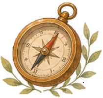
旅圖門口｜耳朵，可以醒來了
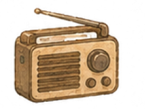
先不急著談第一件樂器。第 001 篇，是隔壁家的第一個早晨。水壺、杯子、植物、地毯、唱片機、寵物小動作，先把耳朵叫醒。
這一站像把鞋帶繫好。聲音不一定要很宏大才值得聽。只要願意停一下，世界在家裡就已經開始響了。
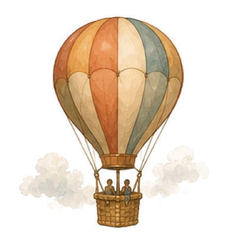
旅圖一｜氣息離開身體
窗戶打開，第一段旅圖從一口氣開始。奈伊笛、尺八、簫、班蘇里笛、克納笛、排簫、陶笛、迪吉里杜管，會帶我們聽見氣流、管口、邊緣、長音與身體裡的空間。
接著，氣會碰到簧片。口簧琴、笙、葫蘆絲、杜讀管、祖爾納管、風笛，把一小片會震動的東西變成鼻音、歌聲、隊伍、哭腔與耳邊的低語。再往前，嘴唇震動會把聲音送得更遠：羊角號、海螺號、阿爾卑斯長號、冬欽號，像把一座山、一片海或一群人叫醒。
女孩會研究吹口、指孔、簧片和號角形狀；男孩會聽長音怎麼穿過胸口。白兔注意換氣聲，水豚等尾音，刺蝟盯著口簧裡的小暗號。
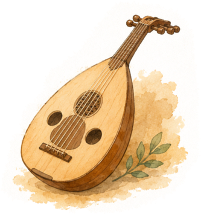
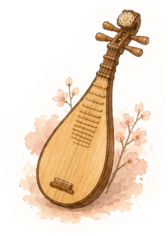
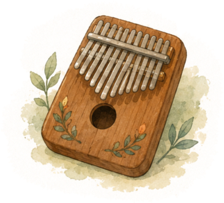
旅圖二｜懷裡與大地的弦
午後，桌上換成木頭與弦。烏德琴、魯特琴、琵琶、三味線、錫塔琴、曼陀林、斑鳩琴，像旅人把故事抱在懷裡。聲音一撥就亮，一亮又消失，像腳步，也像一句還沒說完的話。
有些弦平放在大地上。古箏、古琴、日本箏、伽倻琴、卡農琴、揚琴、桑圖爾琴、鋼琴，讓手指、琴槌、琴碼與共鳴箱一起說話。女孩會比較短頸長頸、圓背平背、弦數與琴身；男孩會聽撥弦如何在木頭裡停留。
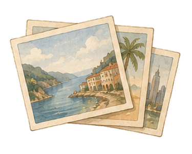
旅圖三｜天空裡拉長的弦
傍晚，光被拉長，弦也被拉長。豎琴、里拉琴、科拉琴、克拉爾琴，讓開放弦像天空和河流一樣循環。二胡、馬頭琴、薩朗吉琴、卡曼恰琴、拉巴卜琴、輪弦琴，讓弓毛把聲音拉成哭與唱。
這一段不急。女孩也許本來還想追問構造，聽著聽著，筆停下來。男孩會把播放倒回去，因為有些拉長的聲音只聽一次，心裡還沒有準備好放手。
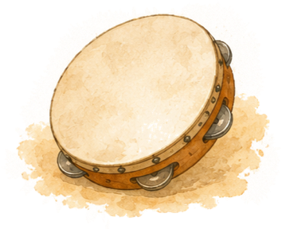
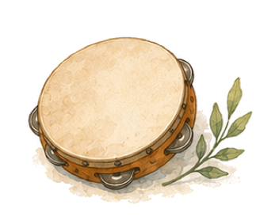
旅圖四｜地心與手邊的微光
夜裡開燈，地毯先聽見低音。金貝鼓、塔布拉鼓、木箱鼓、達布卡鼓、太鼓，讓鼓面中心、邊緣、手掌、指尖、鼓槌和身體重量都變成聲音的一部分。
再靠近一點，姆比拉、卡林巴、手碟、空靈鼓、頌缽、音樂盒，把聲音縮到手心與耳邊。它們不一定大聲，可是會在房間裡留下光。絨鼠會讓大家靠近一點，水豚會提醒大家不要急著切下一段。
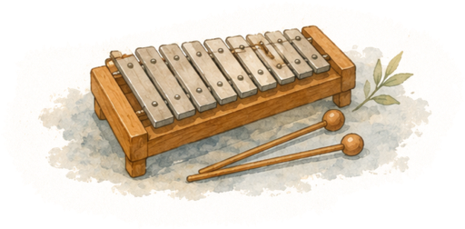
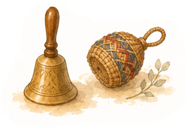
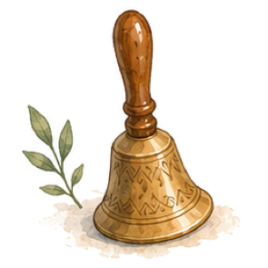
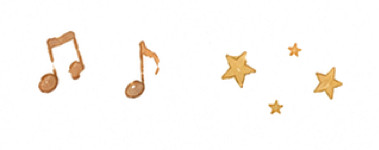
旅圖五｜城市與星塵的節奏
深夜，房間變成回聲城市。甘美朗、鑼群、編鐘、編磬、木琴、巴拉風、馬林巴、安克隆竹琴，讓木、石、金屬與竹子排成一座會響的城市。每個聲音都有位置，彼此留縫，也彼此照亮。
掌心裡還有星塵。沙鈴、謝克雷、卡巴薩、刮瓜、克拉維斯、響板、雨聲棒、鈴串、三角鐵，聲音短、亮、準，像在音樂裡放下小小路標。刺蝟在這裡會特別忙，因為牠不能錯過任何一下短音。
旅圖六｜按鍵打開房間，眾聲走向廣場
最後，鍵盤與電腦打開。管風琴、簧風琴、手風琴、班多鈕手風琴、鋼片琴、電鋼琴、美樂特朗、合成器、取樣器、鼓機、特雷門琴，讓按鍵、風箱、槌子、磁帶、電路與控制訊號一起進場。
再往外走，聲音進入廣場。甘美朗合奏、阿拉伯塔赫特合奏、安地斯合奏、墨西哥流浪樂隊、藍草合奏、非洲鼓樂隊、國樂團、管弦樂團、爵士大樂團與現代混合編制，讓我們聽見眾聲如何分工、回答、等待、支撐。
這一站會把古老的聲音交給今天的耳朵。錄音、博物館示範、復原演奏、影視配樂、劇場軟體、採樣音源、電子控制器、網站資料庫，都讓遠方與過去的聲音有機會再被遇見。
五、古老的聲音，今天的耳朵，手邊的小實驗
每一件樂器都有來路。
古老的聲音，藏在材料、地理、社群、儀式、勞動、節慶、宮廷、街頭、身體手勢與傳承裡。今天的耳朵，透過錄音、展覽、影片、資料庫、現場演出、採樣、配樂和創作，再一次遇見它們。
手邊的小實驗，讓身體先靠近一點。吹紙不等於奈伊笛，橡皮筋也不等於科拉琴；紙箱只能借我們聽一點空腔，鉛筆只能借我們感覺短音怎麼對齊時間。真正的樂器、演奏者與文化脈絡，仍然要被好好認識。
遠方讓人知道聲音有來處，手邊讓人知道聲音會發生在身體附近。兩邊一起走，耳朵才會慢慢醒來。
六、出發前，請帶上這幾樣東西
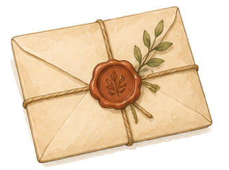
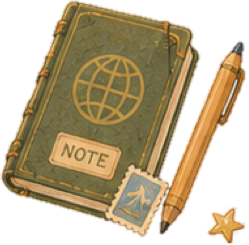
帶上一點好奇心。女孩會帶你看孔洞、弦數、材料、形狀和小小差異。
帶上一點安靜。男孩會提醒你，有些聲音要先讓它落到身體裡，才知道它厲害在哪裡。
帶上一點時間。水豚會等尾音，白兔會注意小聲，刺蝟會抓住短音，絨鼠會讓大家靠近。
也帶上一點手邊的小東西吧。薄紙、橡皮筋、紙盒、鉛筆、鑰匙、湯匙、杯子，都可能在某一頁突然派上用場。它們無法替真正的樂器說話，卻會幫耳朵先開一扇小窗。
下一次聽到陌生聲音時，你也許會停一下。想想它從哪裡來。想想是氣、弦、皮膜、木頭、金屬、按鍵，還是某個人很久以前留下的手勢。
然後，再聽一次。
水壺還是那個水壺，杯子還是那個杯子，植物還在窗邊，白兔還會被小聲音吸引，刺蝟還會盯住那一下暗號，水豚還在等尾音，絨鼠仍然讓大家靠近一點。
可是耳朵已經不一樣了。
你聽。
旅圖已經開始了。
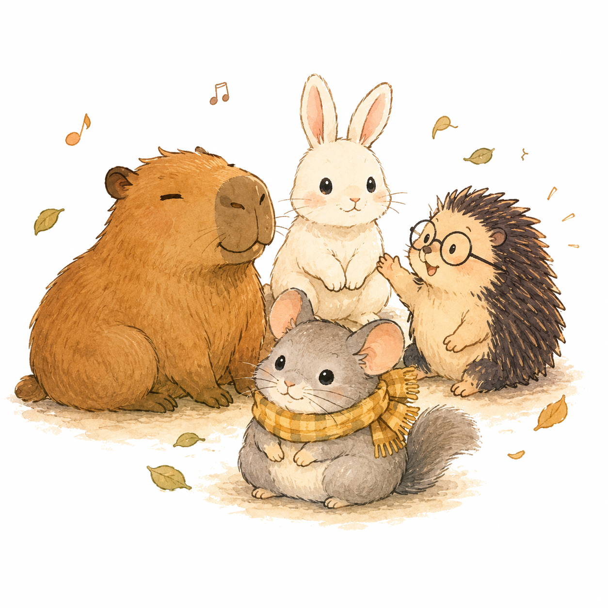